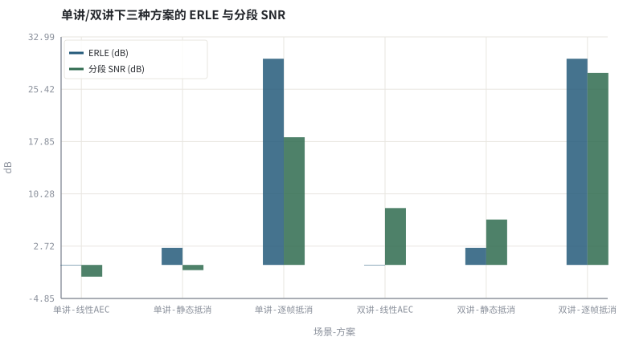
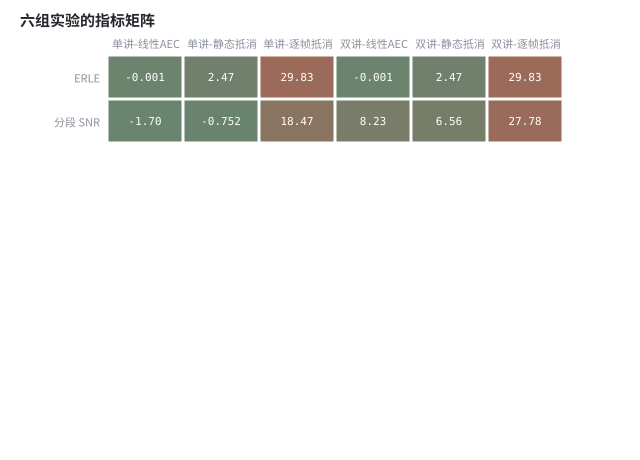

第 24 章神经 AEC 与回声/噪声联合抑制
把远端参考接进网络：从「减掉预测回声」到「学一个残余抑制器」。
本章位置：第 23 章 · 神经噪声抑制：从 RNNoise 到 DNS Challenge 处理无参考的噪声，本章把参考信号接回来；第 25 章 · 神经增益控制与感知响度 处理增益，第 26 章 · 联合 3A：多任务、级联与端到端建模 把三个任务合到一个模型里。
神经 AEC 是一个「有第二个输入端口的掩码估计器」：远端参考是条件变量，网络学的是条件分布 p(近端谱 | 麦克风谱, 参考谱)。
- 能画出神经 AEC 的三种接法并说明各自的输入输出。
- 能解释参考信号如何作为条件输入进入网络。
- 能量化双讲条件下固定抑制与自适应抑制的差距。
- 能说明为什么神经方法常作为线性 AEC 的后处理而非替代。
§知识点地图
每个知识点都配了 1～2 个扩展学习链接；本章完整资源清单见 扩展学习。
| # | 知识点 | 扩展学习 | 状态 |
|---|---|---|---|
| 1 | 线性 AEC + 神经后处理 | Echo cancellation ↗ · ITU-T G.168 ↗ | 正文已覆盖 |
| 2 | 参考信号条件输入 | Microsoft AEC Challenge ↗ · ClearerVoice-Studio ↗ | 正文已覆盖 |
| 3 | 对齐与时延估计 | Microsoft AEC Challenge ↗ · ClearerVoice-Studio ↗ | 正文已覆盖 |
| 4 | 残余回声功率谱 | Echo cancellation ↗ · WebRTC AEC3 模块 ↗ | 正文已覆盖 |
| 5 | 双讲透明度 | ITU-T G.168 ↗ · Microsoft AEC Challenge ↗ | 正文已覆盖 |
| 6 | ERLE 与近端失真权衡 | Microsoft AEC Challenge ↗ · ClearerVoice-Studio ↗ | 正文已覆盖 |
| 7 | 端到端神经 AEC | Echo cancellation ↗ · ITU-T G.168 ↗ | 正文已覆盖 |
| 8 | AEC Challenge | Echo cancellation ↗ · ITU-T G.168 ↗ | 正文已覆盖 |
§24.1三种接法，同一个接口
| 接法 | 网络输入 | 网络输出 | 特点 |
|---|---|---|---|
| 后处理型 | 误差谱 + 远端参考谱 | 残余回声/噪声增益 | 最稳，工业主流 |
| 联合估计型 | 麦克风谱 + 远端参考谱 | 近端语音掩码 | 端到端优化，需大量配对数据 |
| 全替代型 | 麦克风波形 + 远端波形 | 增强波形 | 无需手工 AEC，但算力与风险最高 |
主流工程几乎都保留线性 AEC：它有参考、可证明收敛、低算力，能把回声能量先消掉 20～30 dB；网络只处理非线性失真、路径突变与双讲残差。Micrsoft AEC Challenge 的基线也是「经典线性 AEC + 神经后处理」的组合。
§24.2双讲是神经 AEC 的试金石
G[t,k] = max(G_floor, 1 − β·P̂_res[t,k] / P_e[t,k]) ，P̂_res ≈ γ·|Ŷ|²
残余回声功率无法直接观测，但线性滤波器的输出 Ŷ 携带「此刻应该有多少回声」的信息，把它按泄漏系数缩放就是廉价估计（WebRTC AEC3 的核心思想）。双讲时 P_e 中混进大量近端语音，若用静态系数抵消会把近端一起压掉；网络学到的正是「根据参考与误差的关系判断此刻该压多少」。
- 对齐：参考信号必须先与麦克风对齐，否则网络学到的是错误的时延分布。
- 透明度：双讲段应同时报近端 SI-SDR 与 ERLE，只看 ERLE 会奖励过度抑制。
- 非线性：扬声器削波产生的谐波与参考不成线性关系，只能靠后处理。
本实验用一段前半段有回声、后半段无回声的受控信号，对比静态抵消系数与逐帧 oracle 抵消。量化的是「条件化估计」相对「固定参数」的价值，不是任何具体网络的性能。
§Python 实验
实验 24-1 · 时变残余回声下的静态抵消 vs 逐帧 oracle 抵消
#!/usr/bin/env python3
# -*- coding: utf-8 -*-
"""构造前半段有回声、后半段无回声的受控场景，量化静态系数与逐帧估计的差距。
全部语音 / 噪声 / 房间冲激响应均为代码合成信号，仅用于教学演示机制与量级。
"""
from __future__ import annotations
import math
import pathlib
import random
import statistics
import sys
import time
_here = pathlib.Path(__file__).resolve()
for _p in _here.parents:
if (_p / "tools" / "dsp.py").exists():
sys.path.insert(0, str(_p / "tools"))
break
from dsp import (SAMPLE_RATE, fft, hann, stft, istft, magnitude_db, spectrum,
white_noise, tone, chirp, synthetic_speech, rir, convolve,
fft_convolve, delay, clip, normalize_peak, rms, rolling_rms,
smooth, db, energy_db, snr_db, erle_db, seg_snr_db,
scale_align, si_sdr_db, lufs_approx,
write_wav, read_wav, wav_info)
from chart import Chart, heatmap, BLUE, RED, GREEN, AMBER
FIG = _here.parents[1] / "fig"
AUDIO = _here.parents[1] / "audio"
FIG.mkdir(exist_ok=True)
AUDIO.mkdir(exist_ok=True)
random.seed(7)
# ---- 参数区 ----
N = 8000
LEAK_FIRST = 0.50 # 前半段线性 AEC 残留的回声比例
LEAK_SECOND = 0.00 # 后半段远端静音 / 路径变化后不再有回声
STATIC_ALPHA = 0.25 # 静态抵消固定使用的系数
# ---- 计算与作图 ----
rng = random.Random(7)
far = synthetic_speech(rng, N)
near = synthetic_speech(rng, N)
h = rir(rng, 128, decay=0.006)
echo_full = [1.4 * v for v in fft_convolve(far, h)[:N]]
alpha = [LEAK_FIRST if i < N // 2 else LEAK_SECOND for i in range(N)]
res_echo = [alpha[i] * echo_full[i] for i in range(N)]
noise = white_noise(rng, N, 0.003)
def run(near_gain, mode):
clean = [near_gain * near[i] for i in range(N)]
linear = [clean[i] + res_echo[i] + noise[i] for i in range(N)]
if mode == "linear":
out = linear
elif mode == "static":
out = [linear[i] - STATIC_ALPHA * echo_full[i] for i in range(N)]
else:
out = [linear[i] - alpha[i] * echo_full[i] for i in range(N)]
residual = [out[i] - clean[i] for i in range(N)]
return erle_db(res_echo, residual), seg_snr_db(clean, scale_align(out, clean)), out
conditions = (("单讲", 0.30), ("双讲", 0.90))
modes = (("线性AEC", "linear"), ("静态抵消", "static"), ("逐帧抵消", "adaptive"))
erles, snrs, labels = [], [], []
for cname, ng in conditions:
for mname, mode in modes:
e, s, out = run(ng, mode)
erles.append(e)
snrs.append(s)
labels.append(cname + "-" + mname)
if cname == "双讲" and mode == "linear":
linear_dt = out
if cname == "双讲" and mode == "adaptive":
adaptive_dt = out
c = Chart(FIG / "24-aec.svg", "单讲/双讲下三种方案的 ERLE 与分段 SNR", xlabel="场景-方案", ylabel="dB",
xticks=[(i, l) for i, l in enumerate(labels)])
c.bars(range(len(labels)), erles, BLUE, label="ERLE (dB)")
c.bars(range(len(labels)), snrs, GREEN, label="分段 SNR (dB)")
print("AEC图:", c.save())
heatmap(FIG / "24-matrix.svg", [erles, snrs], ["ERLE", "分段 SNR"], labels,
title="六组实验的指标矩阵", vmin=-10, vmax=35, annotate=True)
print("矩阵图:", str(FIG / "24-matrix.svg"))
write_wav(AUDIO / "24-linear.wav", normalize_peak(linear_dt))
write_wav(AUDIO / "24-adaptive.wav", normalize_peak(adaptive_dt))
for l, e, s in zip(labels, erles, snrs):
print("%s: ERLE=%.2f dB segSNR=%.2f dB" % (l, e, s))
print("SAMPLE_RATE=%d | 前半段泄漏=%.2f 后半段=%.2f 静态系数=%.2f" %
(SAMPLE_RATE, LEAK_FIRST, LEAK_SECOND, STATIC_ALPHA))操作：重点比较双讲三组的分段 SNR；试听两个双讲 WAV。 预期与判读：静态系数在前半段只抵消了一部分回声，后半段远端已静音却仍继续减，等于凭空往输出里加入反向回声，近端语音被明显损伤；逐帧估计随路径变化更新，两项指标都更好。这正是双讲与路径突变下必须用条件化的神经后处理替代固定增益的原因。
改参数看趋势：把 STATIC_ALPHA 改成 0.50，前半段抵消更准，但后半段的反向回声也更强。 文件位置：part5/24-neural-aec/code/24-neural-aec.py


24-linear.wav
双讲：仅线性 AEC，前半段有残余回声（16 kHz / 16-bit 单声道，代码合成信号，不是真实录音）
24-adaptive.wav
双讲：逐帧抵消后的输出（16 kHz / 16-bit 单声道，代码合成信号，不是真实录音）
代码块右上角可一键复制；仓库里的 code/*.py 由 tools/extract_code.py 从这些代码块自动抽取。脚本只用标准库、固定 random.seed(7)，运行后写出 fig/*.svg 与 audio/*.wav；批量运行用 ./tools/run_python.sh。
§可选真机命令片段
以下命令不参与批量运行，需要本机自行安装对应工具。滤镜是否可用取决于本机 ffmpeg 版本与编译选项，请先用 ffmpeg -filters / ffmpeg -version 自查，并以 https://ffmpeg.org/ffmpeg-filters.html 与各自官方文档为准；本书不假定任何特定版本具备某项能力。
查看 AEC Challenge 的数据与基线说明
git clone --depth 1 https://github.com/microsoft/AEC-Challenge && ls AEC-Challenge/说明：该仓库提供真实双讲、非线性失真与远端单讲录音；请以其 README 与许可为准，本书实验全部使用合成信号。
§本章参考资料
按本章知识点挑选的精读资料；更多检索入口见 扩展学习。
§相关开源工程
下列工程仅作技术参照，版权与许可证归各自维护者所有。本书实验不依赖它们，也与之无从属关系。
§常见误区
- 忘记对齐参考与麦克风，网络学到错误的时延。
- 只报单讲 ERLE，忽略双讲段的近端失真。
- 用线性 AEC 的输出直接当标签，把残余回声也标成干净语音。
- 把 oracle 残余功率谱当成网络可观测输入。
§习题与思考
- 画出后处理型神经 AEC 的张量流图并标注因果性。
- 解释为什么工业系统保留线性 AEC 而不做全替代。
- 设计一组同时报 ERLE 与双讲透明度的评测表。
§扩展学习
继续检索
- Google Scholar：deep acoustic echo cancellation joint AEC NS ↗
- arXiv：deep acoustic echo cancellation joint AEC NS ↗
- GitHub：deep acoustic echo cancellation joint AEC NS ↗
全书链接总表见 FFmpeg Filters 文档 ↗ 与 附录 A.7；滤镜是否可用请以本机 ffmpeg -filters 为准。